Contents
- A channel, a shelf and a strait
- The barotropic experiments
- A tidal flat across an interface
- Temperature, with a different number of layers per level
- Current results
- A stratified lake at rest
- A pycnocline over the shelf slope
- A dye front through the levels
- What the 3D exchange costs
- A shorter 3D step for a child
- A bent fjord on a curvilinear grid
Under development · updated 5 November 2026
IDEAL: three nested levels with known answers
A Cartesian channel with an analytic depth and three nested pyGETM levels, 3 km, 1 km and 333 m, with every feature of the nesting placed on purpose. It is where the two-way nesting for pyGETM is tested before it goes into the realistic setups NEAB and DKm. Runs take minutes on a few cores. The tests are in order of increasing complexity: first in 2D (rest, conservation, the tide, then wetting and drying), then in 3D (conservation, a lake at rest, a pycnocline and a dye front moving through the levels, and what the 3D exchange costs).
- levels
- 3
- volume conserved
- 2e-16
- heat conserved
- 1e-9
- layers
- 10 / 15 / 20
3 km → 1 km → 333 m
relative, 2D
relative, 3D, 48 h
a different number per level
A channel, a shelf and a strait
The root is a channel of 360 × 180 km at 3 km, with an open (Flather), closed or periodic boundary at each end and an M2 tide of 0.5 m at the open one. The shelf level (1 km, ratio 3, time ratio 1) nests in its middle, the strait level (333 m, ratio 3, time ratio 3) in the shelf. Planted features:
- An island across the shelf's west interface: the interface runs through land.
- An active region bounded by a barrier: the shelf's north-east corner stays with the channel, so that interface is not on the window's edge.
- A wall with a 1 km gap: open in the shelf (1 cell) and the strait level (3 cells), closed in the channel, as the Little Belt in NEAB.
Depth and land of the three levels; the shelf's window and active region (red), the strait level's (blue). The edges of the rectangles are the interfaces; the rim lies just inside them, the ring just outside.
Every level over the cells it computes, for the three depth configurations: flat at 50 m (the 2D tests and the first 3D tests), 50 → 20 m across the shelf window (V2) and 50 → 10 m (V5, V6). Below: the depth along y = 90 km; dashed: the interfaces; dotted: the pycnocline's initial depth.
Each level is an ordinary pyGETM model (IDEAL/models/<level>/run.py), launched as one MPMD component.
The nesting (pygetm.nesting on the fork bolding/pygetm) fills the halo zones where the levels overlap
and matches the fluxes through the faces between them. How it works is described on the
nesting page.
The barotropic experiments
| Experiment | Result | |
|---|---|---|
| E1 | Sea at rest, 12 h | passed: elevation exactly 0 in every level |
| E2 | Volume conservation, a 0.5 m bump in a closed basin | passed: 2e-16 relative; found an instability |
| E3 | Tide against one level at 333 m everywhere | nested within 0.4–2.6 cm (tidal range 21–34 cm) |
| E8 | Independent of the process split | passed for 1/1/1, 2/3/2, 1/2/1, 1/1/2 processes; one tile layout differs by 1e-4 m (open) |
| E9 | Time per model | measured: compute, nesting work, transfer, wait |
E2 found an instability of a sub-stepping child under flux matching. It is removed by an AGRIF-like sponge next to the interface, which all runs below use (3 child cells, α = 0.1).
Issues found and solved along the way: A sub-stepping child is unstable under flux matching, pyGETM applied the transport damping with the time step twice.
Nested against one level at 333 m everywhere
Each level over the cells it computes. The tide crosses the interfaces without jumps. With rotation it travels as a Kelvin wave along the southern wall, reflects at the closed east end and returns along the northern wall.
Solid: nested, time ratio 3 with the sponge; dashed: time ratio 1; dotted: one level at 333 m everywhere. Time ratio 1 is within 0.4–1.0 cm everywhere; time ratio 3 within 0.7–0.9 cm on the shelf and in the strait, 2.2–2.6 cm in the channel, which steps at 18 s instead of 6 s.

Left: nested (3 km / 1 km in the red box / 333 m in the blue box). Right: one level at 333 m. Below: the stations.
Bit-identical for 1/1/1, 2/3/2, 1/2/1 and 1/1/2 processes. With the channel on 3 processes its tile edges fall on the shelf window's edges and the results differ by 1e-4 m: still open.
compute: the model's own step; work: restriction, flux matching, ring values; transfer: receiving data; wait: blocked until the partner's data is there.
A tidal flat across an interface
Wetting and drying where parent and child meet: a flat whose bed rises from 1 m below to 1 m above mean sea level
across the shelf's west interface (0 m at x = 120 km), so the wet/dry front moves through the interface with the tide. pyGETM's
drying in every level (Dmin 0.05 m, Dcrit 0.2 m), Flather boundaries at both ends of the channel with a 0.5 m M2 tide
(IDEAL/config/ideal_dry.yaml).
pyGETM keeps a dry cell at its bed + Dmin and tapers every momentum term except the pressure gradient with a factor that goes from 0 at a face depth of 2 Dmin to 1 at Dcrit. The coupling now does the same where it sets the child's values:
- The ring's elevation comes from the parent's mean over each 3 × 3 block. On a slope that mean lies below the bed of the higher ring cells, which got negative water depths (down to −0.06 m). The ring elevation is now never below the child's own bed + Dmin: a ring cell there is dry, like the child's own dry cells.
- The ring's transports are the parent's, through faces that can be wet in the parent while the child's finer face is dry. They are now scaled by pyGETM's drying factor from the child's own depth at each face, so no water moves over the child's dry ground.
- Unchanged: the child's edge faces are its own (its drying factor and pressure gradient); the parent's rim is the mean of the child's cells, dry ones at their bed + Dmin, so parent and child hold the same volume. In deep water nothing changes.
Over 25 h the ring's depths stay at or above Dmin, up to 320 shelf cells fall dry, and the front crosses the interface both ways. In a closed basin with a 1 m bump on the flat the volume of all levels together is conserved to 4e-16 while the flat floods and drains across the interface. The negative depths of that dam break (−0.24 m in the channel) are pyGETM's own: the channel alone gives the same.
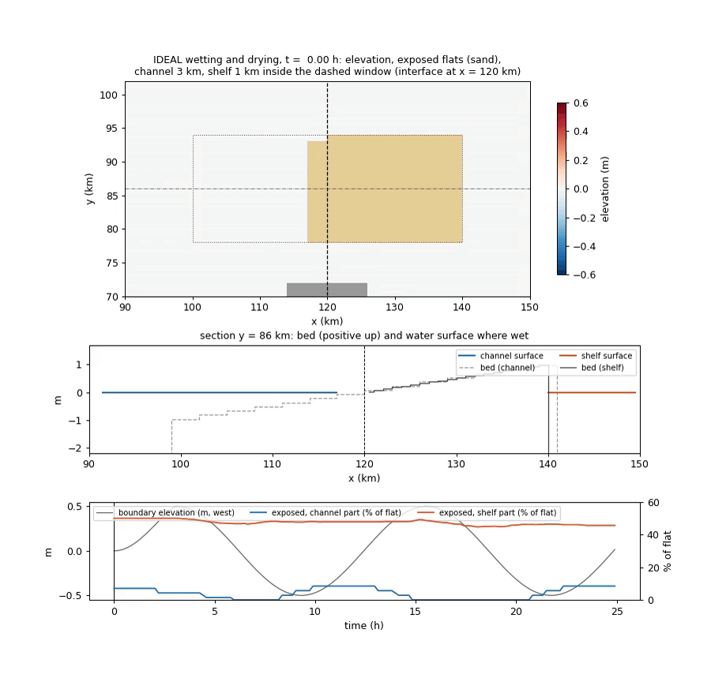
The flat (dotted) with the 3 km channel and the 1 km shelf inside the dashed window; exposed cells (water depth below 2 Dmin) in sand. Middle: the section along the flat, bed and water surface where wet. Bottom: the boundary tide and the exposed share of the flat in each level. Every 10 minutes over 25 h (also as MP4: ideal_dry.mp4).
The channel's part of the flat is exposed; on the flat west of the interface water drains slowly through the shallow cells, as in pyGETM without nesting.
The water reaches into the shelf's part of the flat.
Still to do: the parent's side (the flux correction on a nearly dry parent cell), the sponge and the 3D ring next to drying cells, and a Wadden Sea–like run.
Issues found and solved along the way: A child's ring below its own bed on a drying flat.
Temperature, with a different number of layers per level
The same three levels in 3D: baroclinic, with temperature and constant salinity, and sigma layers of their own in each level (channel 10, shelf 15, strait 20). The levels' layers do not line up, so every exchange of a profile goes through a conservative vertical remap.
In these runs all levels share the 3D time step (181 s): a child's split factor is its parent's times its time ratio, so every
3D step is a sync. A child can also have a shorter one: 3D sub-stepping. At each sync (pygetm.nesting.nested3d.Nested3D):
- Rim (child → parent): the 3 × 3 child columns of each parent rim cell are remapped onto the parent's layers (the upper 80 % of the column unstretched, the rest stretched to the parent's depth), with concentrations by the volume each parent layer receives. A uniform field stays uniform.
- Ring (parent → child): the parent's column, remapped onto the child's layers in each ring cell; and the parent's layer transports at the faces around the ring, remapped onto the child's face layers and shifted to the child's own column total.
- 3D transports at the interface (child → parent): the child's layer transports through its edge faces replace the parent's at the window faces, before the parent advects, so both move the same water through every layer.
- 3D flux register (child → parent): the tracer amounts through the child's edge faces over the 3D step, remapped onto the parent's face layers; the parent cell next to each face is corrected layer by layer.
The initial state is at rest with a pycnocline that deepens from 10 m in the west to 25 m in the east, so the sloping isopycnals adjust and drive flow across the interfaces, plus the tide at the open west end.
| Test (48 h unless noted) | Result |
|---|---|
| uniform temperature, tide, full coupling (12 h) | T = 12 °C to 3e-13 in all levels |
| closed basin, no 3D coupling | heat content of all levels, max change 9e-6 |
| closed basin, rim and ring only | 2.5e-5 |
| closed basin, full coupling | 1.2e-9 |
| sloping pycnocline, tide, without the sponge | the strait level blows up at 11 h, with or without 3D coupling (issue) |
| sloping pycnocline, tide, sponge, full coupling | stable; the pycnocline continuous across both interfaces |
A west–east section at y = 90 km, each level over the cells it computes, with its own layers (5 m, 3.3 m and 2.5 m): at the start and after 48 h with the full coupling, with rim and ring only, and without 3D coupling.
Depth of the 12 °C isotherm: continuous across both interfaces.
All levels over the cells each computes. With the 3D transports and the flux register the change is 1e-9; with rim and ring only it is 2.5e-5.
Issues found and solved along the way: Exact content in the 3D rim made a uniform field non-uniform, The parent's 3D transport at the interface was 10 % off, Parent and child move different water through each layer of the interface, 3D runs need the sponge too.
3D velocities in the child's ring
The child's ring faces are set by the coupling, not computed by the child. In 3D the child first filled them with its own layer profile, shifted to the ring's 2D transport. Now it takes the parent's layer transports there: the two parent faces around each ring face (linear across, constant along, as in 2D), remapped onto the child's face layers and shifted to the child's column total. They are set at the child's 3D momentum step and held over the 3D step. The jump of the 3D velocity between a ring face and the child's first interior face, relative to the interior velocity, over the 48 h tidal run:
| Interface | child's own profile | the parent's profile |
|---|---|---|
| shelf, west / east (u) | 0.12 / 0.12 | 0.06 / 0.06 |
| shelf, south / north (v) | 0.94 / 0.96 | 0.51 / 0.55 |
| strait, west / east (u) | 0.10 / 0.12 | 0.03 / 0.04 |
| strait, south / north (v) | 0.91 / 0.97 | 0.52 / 0.45 |
The across-channel velocity v is small, so its relative jumps are large. Heat stays conserved to 1e-9 and a uniform field uniform to 3e-13.
Current results
The whole 3D test list rerun on 11 November 2026 with the current code: limited ring slopes, simple time steps (root 18 s,
strait 6 s), the flux correction without new extrema and the fix for adaptive layers below. 48 h, 2 processes per level; V5 and V6
against one model at 333 m everywhere. The tables in the chapters below are history, each right for the code of its date. The couplers are now
Nested2D and Nested3D, with their options cleaned up (Methods); results unchanged.
| Test | R = 1 | strait R = 3 | chain |
|---|---|---|---|
| uniform temperature, tide, 12 h: largest departure (°C) | 2.2e-13 | 2.7e-13 | 7.8e-13 |
| closed basin: heat of all levels, 48 h | 4.7e-11 | 4.8e-11 | 4.7e-11 |
| dye with tide, 48 h: new extrema / content of all levels | < 2e-13 / −9.7e-10 | < 2e-13 / −9.6e-10 | < 2e-13 / −9.5e-10 |
| V2 at rest: largest spurious speed, channel / shelf / strait (mm/s) | 2.8 / 6.7 / 3.8 | 2.8 / 6.7 / 3.8 | 2.8 / 6.7 / 3.8 |
| V2, each grid alone (mm/s) | 1.4 / 2.6 / 0.7 | ||
| V5: pycnocline depth, rms against 333 m (m) | 0.132 / 0.118 / 0.080 | 0.132 / 0.118 / 0.090 | 0.131 / 0.117 / 0.090 |
| V6: surface dye, rms against 333 m | 0.037 / 0.025 / 3.9e-4 | 0.037 / 0.025 / 4.0e-4 | 0.037 / 0.025 / 3.9e-4 |
| V6: new extrema / dye content of all levels | < 2e-13 / −2.2e-10 | < 2e-13 / −2.2e-10 | < 2e-13 / −2.0e-10 |
The chain: shelf R = 2, strait R = 3. The 333 m reference's own dye stays within 8e-14 of [0, 1].
The cost (V7): V5 over 24 h, 2 processes per level, one run at a time.
| Run | 3D exchange work per 3D step, channel / shelf / strait | run time vs. no 3D coupling |
|---|---|---|
| T, S | 4.5 / 14.3 / 11.3 ms | +23 % |
| T, S, PCM | 3.8 / 10.8 / 7.9 ms | +21 % |
| T, S, ring without slopes | 4.8 / 9.8 / 5.7 ms | +12 % |
| 14 tracers | 15.1 / 67.4 / 61.9 ms | +66 % |
| 14 tracers, PCM | 10.3 / 46.3 / 41.7 ms | +52 % |
| 14 tracers, ring without slopes | 15.0 / 35.2 / 20.7 ms | +36 % |
The ring's slopes are the dearest part. The remap is now one compiled pass (_pygetm.remap_z, results bit-identical), and the
slopes are taken from anomalies on the parent's own layers: each parent column minus the child's column remapped onto its layers, then remapped once
onto the ring cell's layers, 12 remaps per ring cell and tracer instead of 16. That changes the results only slightly (V6 the same, V2 a little better,
V5 one band in the channel 4 % worse). PCM instead of PPM (remap_scheme, per interface) makes the exchange 25–35 % cheaper, with the
pycnocline next to the interfaces 4–8 % less accurate; both are kept, as adaptive layers should make the difference smaller. The flux correction's
limiter costs little, about 1 % of the shelf's exchange.
The flux correction without new extrema
The parent's flux correction adds to each cell next to the hole the difference between the children's and its own tracer flux through the interface. Near a sharp front that could push a cell outside its neighbours' range: in V6 the channel reached 1 + 1.3e-4. Without the correction there are no new extrema, but the content drifts by 1e-3, so the correction is right and only its distribution in space is not. Now (always on) the corrections of all children are collected per cell, the corrected value is clipped to the range of the cell, its four neighbours and the layers above and below, and the net amount cut off in a column is spread over that column's layers that have room left. What still does not fit is kept as an amount and added at the next sync (restart state), so nothing is lost. A first version deferred everything cut off; at rest it kept putting the excess back into the same cells, and spreading over the column leaves practically nothing to defer.
| V6, 48 h | without | limited |
|---|---|---|
| new extrema, channel / shelf / strait | 1.3e-4 / 2.2e-5 / 0 | < 1e-13 everywhere |
| dye content of all levels | −4e-10 | −2.5e-10 |
| surface dye against 333 m; V5 pycnocline | unchanged | |
| restart halfway | – | bit-identical |
Adaptive layers next to an interface
Two identical runs of V2 differed by up to 1 °C after an hour, even on one process per level, while V6 (sigma layers) and every grid alone were bit-identical. The difference began in the strait's ring cells at the first 3D step: pyGETM's adaptive coordinates set their layer heights only in cells with mask 1 but used them in all cells with mask ≥ 1, which includes the nesting's ring (and open boundaries), where they were uninitialized memory. Fixed in the fork (changes to pyGETM); V2 is now bit-identical from run to run. The V2 speeds in the older tables are therefore single draws.
A stratified lake at rest
A closed basin, no tide, no wind, and a flat pycnocline at 15 m over a bottom sloping from 50 to 20 m across the shelf window. Nothing should move: every current is error. A single model has some, from the pressure gradient on sigma layers over the slope; the test shows how much the coupling adds, with the channel in sigma layers and the shelf and strait in sigma or in adaptive layers that zoom on the stratification.
pyGETM's adaptive coordinates have about 25 parameters, all off by default except the pull towards the background grid; none of them have been tuned here. The runs use zooming on the density gradient (cNN 1, drho 0.3), a neighbour limit (cneigh 0.1), a shallow-water limit (chmin 0.1, hmin 0.3 m) and a time scale of 3 h, plus three variations.
The fair reference for each level is its own grid run alone with the same setup: the error of sigma layers over a slope depends on the resolution. In 48 h (sigma layers; max |u| over the cells each level computes):
| 48 h, sigma | channel | shelf | strait |
|---|---|---|---|
| each grid alone (single model) | 1.42 mm/s | 1.26 mm/s | 0.87 mm/s |
| nested, without the 3D ring | 1.42 mm/s | 1.08 mm/s | 3.43 mm/s |
| nested, ring with PPM (3 Nov) | 1.92 mm/s (1.4x) | 4.87 mm/s (3.9x) | 1.80 mm/s (2.1x) |
| nested, PPM in the second layers too (now) | 1.41 mm/s (1.0x) | 1.75 mm/s (1.4x) | 1.81 mm/s (2.1x) |
The error that was left came from the shelf's east interface, where the water is 20 m deep and the pycnocline lies in the bottom layers: the remap kept the two outermost layers at each end constant, which put the ring 0.01-0.02 °C off the child's own profile even at rest (issue). With a parabola in the second layers too the channel is at its single-grid level and the shelf at 1.4 times. The strait's maximum is a single face where the wall meets its west interface, a corner like the wall's gap that is the single grids' own maximum; it grows slowly in all runs.
Earlier steps, against the channel alone (1.4 mm/s) and with the shelf and strait in sigma or adaptive layers:
| 48 h, all levels from consistent layer means (before 4 Nov) | max |u| channel | shelf | strait | pycnocline moved (shelf) |
|---|---|---|---|---|
| the channel alone (single model, same step) | 1.4 mm/s | – | – | – |
| nested, sigma, without the 3D ring | 1.4 mm/s | 1.1 mm/s | 3.3 mm/s | 0.01 m |
| nested, sigma, ring from the parent | 16 mm/s | 32 mm/s | 12 mm/s | 0.34 m |
| nested, sigma, ring with the child's vertical detail (PCM) | 8.6 mm/s | 21 mm/s | 6.2 mm/s | 0.16 m |
| nested, sigma, the same with PPM | 2.2 mm/s | 6.5 mm/s | 2.4 mm/s | 0.03 m |
| nested, adaptive, PPM | 3.0 mm/s | 7.7 mm/s | 6.5 mm/s | 0.08 m |
| adaptive, cNN 0.3, PPM | 2.6 mm/s | 6.9 mm/s | 9.1 mm/s | 0.06 m |
| adaptive, time scale 1 h, PPM | 3.3 mm/s | 10 mm/s | 4.5 mm/s | 0.11 m |
| adaptive, pyGETM's defaults (no zooming), PPM | 2.5 mm/s | 8.1 mm/s | 2.9 mm/s | 0.11 m |
Heat is conserved to 1e-10 in every run. The spurious currents the coupling adds sit along the interfaces, mostly on the parent's side, and vanish without the 3D ring: they come from the ring's temperature profile. A piecewise-constant (PCM) remap from the parent's 5 m layers onto the child's finer ones cannot carry a 3 m thick pycnocline. Adding the child's own vertical detail halves them. A limited piecewise-parabolic reconstruction (PPM, Colella and Woodward 1984) in the remap cuts them by another factor of 3, and the displacement of the pycnocline by 5. The channel is then within 1.6 times the single model's error, the strait at the level of the run without a 3D ring, and the shelf, where the slope is, at about 6 times. The adaptive layers do not improve on sigma here; their parameters change the result by less than a factor of 1.5. A scan of them against a real case (V5) comes next.
Max |u| and rms u per level: each grid alone, nested before and after the change of the remap (sigma layers).
Max |u| in the water column after 48 h, nested in sigma layers, before and after the change of the remap.
Issues found and solved along the way: Spurious currents at the interfaces in a lake at rest, The 3D ring could not carry the child's vertical structure, The remap's outer layers were constant.
A pycnocline over the shelf slope
Does the nesting move a pycnocline correctly across the interfaces? The bottom slopes from 50 to 10 m across the shelf window, so a pycnocline that starts flat at 15 m meets the bottom on the shelf and forms a front. The M2 tide from the open west end, with rotation, moves the stratified water across both interfaces twice a day. The reference is one model at 333 m with 20 layers everywhere, the strait's resolution over the whole domain (1080 × 540 cells, 32 cores).
Measured, for every level against the reference averaged over each of its cells: the depth of the 12 °C isotherm (the pycnocline) and the pycnocline's thickness (10.5–13.5 °C), rms over 12–48 h, over the cells the level computes and over those within 3 cells of an interface. All runs in sigma layers.
| Run | Level | pycnocline depth, rms | next to the interfaces | thickness, rms |
|---|---|---|---|---|
| nested, 10 / 15 / 20 layers, PPM | channel | 0.13 m | 0.21 m | 0.51 m |
| shelf | 0.12 m | 0.10 m | 0.26 m | |
| strait | 0.08 m | 0.09 m | 0.09 m | |
| nested, 20 layers everywhere | channel | 0.08 m | 0.10 m | 0.06 m |
| shelf | 0.09 m | 0.06 m | 0.10 m | |
| strait | 0.07 m | 0.08 m | 0.09 m | |
| nested, piecewise-constant remap | channel / shelf / strait | 0.13 / 0.12 / 0.08 m | 0.21 / 0.11 / 0.09 m | 0.52 / 0.25 / 0.09 m |
| nested, stretched vertical map | channel / shelf / strait | 0.13 / 0.12 / 0.08 m | 0.21 / 0.11 / 0.09 m | 0.52 / 0.25 / 0.09 m |
| the channel alone (3 km, 10 layers) | channel | 0.15 m | – | 0.58 m |
- The nesting follows the reference across both interfaces, within 8–13 cm of pycnocline depth. It keeps the eddies behind the wall gap and the front where the pycnocline meets the bottom, which the channel alone misses.
- What is left is mostly vertical resolution, not coupling. With 20 layers in every level the errors drop to 6–10 cm, and the pycnocline's thickness in the channel from 0.51 to 0.06 m. Next to the interfaces the errors are no larger than elsewhere, except in the channel with 10 layers.
- The remap's details do not matter in a flow: PPM, the piecewise-constant remap and the stretched map agree to within 1 cm. They mattered in the lake at rest (V2), where nothing else moves the pycnocline.
Depth of the 12 °C isotherm along y = 90 km: the 333 m reference (black), the nested runs (each level over the cells it computes) and the channel alone.
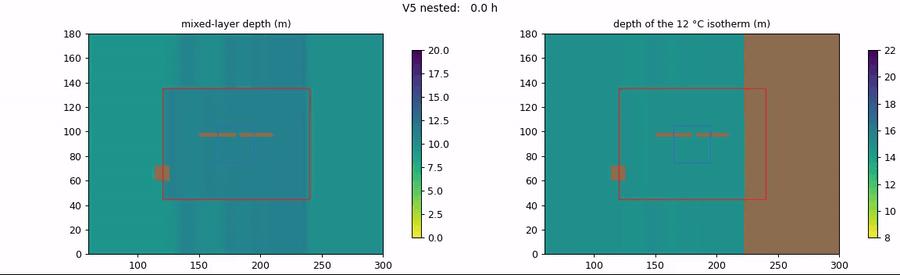
Every hour: the mixed-layer depth (where the temperature has dropped 0.5 °C below the surface) and the depth of the 12 °C isotherm, every level over the cells it computes. Grey: land, and no isotherm east of the front. Also as MP4.
Isotherm depth of the default nested run minus the reference after 48 h, every level over its cells. Largest in the channel at the front east of the shelf, where 3 km cells and 10 layers resolve it least.
A dye front through the levels
Does the coupling keep a tracer within its range? A passive dye starts at exactly 1 between x = 117 and 162 km and at 0 elsewhere, in the V5 setup (pycnocline over the slope, M2 tide, rotation). Its two fronts lie 3 km west of the channel–shelf and the shelf–strait interfaces, and the tide carries them across and back twice a day. Anything outside [0, 1] is a new extremum. pyGETM's advection (SUPERBEE) creates none in a single model: the 333 m reference stays within 1e-13.
| 48 h | Level | max − 1 | −min | surface dye vs reference, rms |
|---|---|---|---|---|
| nested, PPM | channel | 4e-7 | 3.8e-5 | 0.036 |
| shelf | 3.6e-4 | 3.8e-5 | 0.030 | |
| strait | (max 0.06) | 1.2e-4 | 0.001 | |
| nested, PPM, without the ring's child detail | channel | 1e-8 | 4.1e-5 | 0.036 |
| shelf | 3e-10 | 9e-8 | 0.030 | |
| strait | (max 0.06) | 7e-46 | 0.001 | |
| nested, PCM | channel / shelf / strait | 4e-7 / 3.6e-4 / – | 4.5e-5 / 4.5e-5 / 1.2e-4 | 0.036 / 0.030 / 0.001 |
| nested, PPM, the child detail limited | channel | 1.9e-4 | 4.0e-5 | 0.036 |
| shelf | 1.2e-5 | 1.1e-6 | 0.030 | |
| strait | (max 0.06) | 6e-11 | 0.001 |
- The dye is conserved over all levels to 4e-9 at most (2e-10 at the end), with every part of the coupling on.
- New extrema are small but real: up to 3.6e-4 on the shelf, from the ring's child-detail correction (an addition): without it the shelf and strait stay within 1e-7. Limiting the corrected ring value to the range of the parent's value and the child's adjacent one (now the default) brings the shelf to 1.2e-5 and the strait to 6e-11. What remained was on the parent's side: the channel, 1.9e-4 above and 4e-5 below, from the flux correction; limited since 11 November, now below 1e-13.
- PPM and PCM do not differ here. The front stays within 0.03–0.04 of the reference's surface dye.
- A weak test so far: the tidal excursion is only 3–5 km, so the fronts cross the interfaces but do not travel far into the next level (the dye reaches 0.06 in the strait). A mean current would test it harder.
Issues found and solved along the way: The ring's child-detail correction created new extrema.
max(dye) − 1 (above) and −min(dye) (below) per level, with the child detail limited and unlimited; positive values are outside the initial range [0, 1].
Surface dye along y = 90 km: the 333 m reference (black) and the nested runs, each level over the cells it computes; dashed: the interfaces.
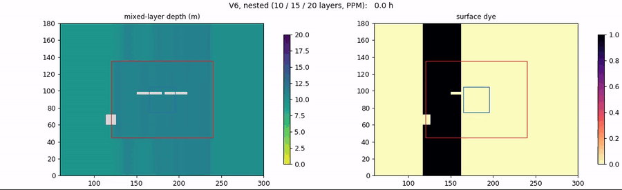
Every 30 minutes: the mixed-layer depth and the surface dye, every level over the cells it computes. Also as MP4.
What the 3D exchange costs
Every part of the 3D coupler has its own timer, separating its work from the time it waits for the partner level. The V5 setup over 24 h (478 3D steps), with temperature and salinity, and with 12 more passive tracers (14 in all), on 2 and on 4 processes per level, against the same runs without the 3D coupling.
| Run | Level | 3D exchange per 3D step, work | waiting | share of the run | run time vs. no 3D coupling |
|---|---|---|---|---|---|
| T, S; 2 processes per level | channel | 12 ms | 31 ms | 10 % | +31 % |
| shelf | 26 ms | 5 ms | 21 % | ||
| strait | 17 ms | 12 ms | 14 % | ||
| 14 tracers; 2 processes per level | channel | 66 ms | 88 ms | 20 % | +80 % |
| shelf | 124 ms | 33 ms | 37 % | ||
| strait | 72 ms | 93 ms | 22 % | ||
| T, S; 4 processes per level | channel / shelf / strait | 8 / 17 / 11 ms | 24 / 6 / 9 ms | 9 / 19 / 12 % | |
| 14 tracers; 4 processes per level | channel / shelf / strait | 35 / 74 / 45 ms | 54 / 12 / 47 ms | 16 / 33 / 20 % |
- The vertical remaps are about 85 % of the work: the rim (on the parent) and the ring (on the child). They grow linearly with the number of tracers, about 4 ms per tracer and 3D step on the shelf. The ring is the dearest part: its child-detail correction needs three more remaps per tracer.
- The rest is small: the flux register 1–4 ms, the 3D transports 1 ms, the ring velocities 2 ms per 3D step.
- The shelf pays most: as a child it remaps its ring, as a parent its children's rim.
- It scales with the processes (35–40 % less work per process on twice as many), as the remaps run where the interface is.
A compiled remap kernel
The remap is now a Fortran kernel in pyGETM (_pygetm.vertical_remap): one pass down each column, a merge of the two
lists of interfaces, with the same PCM or PPM reconstruction and limiter as the numpy version. One call handles all columns
and tracers of an exchange. It equals the numpy remap to 4e-15 and is 15–16 times faster (18,000 columns, 14 tracers: PPM
120 ms against 1,960 ms). All IDEAL results are unchanged: heat in the closed basin 5e-11, uniform to 3e-13, V2 and V6 to
every digit.
| 3D exchange work per 3D step, 2 processes per level | numpy | compiled | share of the run, compiled |
|---|---|---|---|
| T, S: channel / shelf / strait | 12 / 26 / 17 ms | 5 / 13 / 8 ms | 4 / 9 / 6 % |
| 14 tracers: channel / shelf / strait | 66 / 124 / 72 ms | 16 / 36 / 25 ms | 8 / 17 / 12 % |
The exchange's work falls 2–4 times, not 15: a profile puts the kernel at about 40 % of what remains. The columns are now also read from and written into pyGETM's 3D arrays by compiled routines, and the messages packed column by column, without any transpose; that changed the work by less than 10 %. What remains is spread over many small numpy operations on small arrays, where Python's cost per call dominates. The largest single item is the waiting for partner levels, up to 46 ms per 3D step in the channel: load balance.
The 3D cost in the load balancer. nesting-balance now has the 3D exchange in its model: per 3D step the rim
costs n_rim × r² × (nz_child + nz_parent) remapped column-layers on the parent, the ring n_ring × (nz_child + nz_parent) × 4
(the remap and the three of the child-detail correction) on the child, each at (exchange_3d_base + exchange_3d × tracers)
wet-cell 2D steps. Calibrated from these runs against a 2D run on the same machine
(IDEAL/scripts/calibrate_exchange3d.py): exchange_3d_base 0.40–0.54 and exchange_3d 0.20–0.23 per tracer; the estimates
from the rims and from the rings agree within 10 %. The 3D computation itself, c_3d per layer, is 8–13 with T and S.
A balanced run. IDEAL's depth written as level bathymetry files (IDEAL/scripts/ideal_bathymetry_files.py),
nesting-balance with these costs chooses the cores per level; V5 with T and S over 24 h, each split run alone, twice:
| Cores | channel / shelf / strait | wall time | predicted | own computation per level |
|---|---|---|---|---|
| 12, uniform | 4 / 4 / 4 | 30.5, 30.6 s | 6.8 / 13.5 / 17.8 s | |
| 12, balanced | 2 / 4 / 6 | 28.4, 28.8 s (−7 %) | −16 % | 12.4 / 13.3 / 12.5 s |
| 6, uniform | 2 / 2 / 2 | 42.8, 42.5 s | 11.6 / 24.2 / 29.4 s | |
| 6, balanced | 1 / 3 / 2 | 43.7, 43.9 s (+3 %) | −1.5 % | 21.5 / 12.5 / 29.2 s |
| 24, uniform | 8 / 8 / 8 | 25.3, 25.1 s | 1.1 / 8.2 / 11.3 s | |
| 24, balanced | 4 / 8 / 12 | 24.5, 24.6 s (−3 %) | −14 % | 8.1 / 8.5 / 8.8 s |
On 24 cores the balancer again evens out the levels' own computation, but that is only a third of the wall time: the coupling's own work and the waiting hardly shrink with more cores. IDEAL's levels are small (8,000–9,000 wet cells each), so the coupling's fixed cost per step (about 900 wet-cell steps per message) sets the limit: from 12 to 24 cores the balanced run gets only 14 % faster. For NEAB's levels, ten to a hundred times larger, the computation dominates much longer.
On 12 cores the balance works: the levels' own computation becomes nearly equal and the channel's waiting drops from 16 to
6 s. The gain is half the predicted one, as the 2D coupling's own work, the halos and the output are not in the model. On 6
cores there is no better split: the strait's grid (90 × 90) has no better tiling on 3 cores than on 2, and the balancer's small
gain is within its error (it leaves out the 2D coupling's work, which counts when a level is on one core). Calibrated from a run
(--calibrate), the cost factors are 0.87–0.99, close to the model, and the choices stay the same.
Issues found and solved along the way: nesting-balance --calibrate counted the 3D waiting as computation.
With FABM the shares go down. The exchange grows with the number of tracers, but the computation grows faster:
a biogeochemical model adds its sources and sinks in every cell and layer, besides the advection of each tracer, while the
exchange only touches the interface columns. To check, V5 ran with 32 tracers (T, S and 30 passive ones, all exchanged) and a
FABM-like load: after every 3D step each process does three times the work of its own model step, a fixed amount calibrated at
the start (--compute-factor 4). The share of the 3D exchange's own work in the run:
| 12 cores, 4 / 4 / 4 | channel | shelf | strait |
|---|---|---|---|
| 14 tracers | 4.9 % | 14.2 % | 9.4 % |
| 32 tracers, FABM load ×4 | 3.1 % | 7.6 % | 5.3 % |
Calibrated from these runs, the exchange costs 0.21–0.24 per tracer, remapped column and layer, the same as with 2 and 14 tracers: the balancer's model of the exchange holds at 32 tracers. c_3d goes up from 8–13 to 54–106.
Balanced with the load. The first balanced split (1 / 3 / 8) was 41 % slower than the uniform one: the balancer had given every IDEAL level split 1, so the 3D cost of the strait, which does three 2D steps per root step, came out 30 times too high. With each level's split (10, 10, 30):
| Cores | channel / shelf / strait | wall time | predicted | own computation per level |
|---|---|---|---|---|
| 12, uniform | 4 / 4 / 4 | 246.8 s | 120 / 202 / 229 s | |
| 12, balanced | 2 / 4 / 6 | 235.6 s (−5 %) | −10 % | 193 / 212 / 162 s |
| 24, uniform | 8 / 8 / 8 | 160.5 s | 62 / 124 / 138 s | |
| 23, balanced | 4 / 10 / 9 | 145.4 s (−9 %) | −13 % | 103 / 104 / 121 s |
With the computation four times larger, more cores pay off: from 12 to 24 cores the balanced run is 38 % faster, against 14 % with T and S alone. The coupling's fixed cost per step no longer sets the limit.
Issues found and solved along the way: The 3D exchange took a third of a run, nesting-balance gave every IDEAL level split 1, The emulated FABM load fed waiting back into itself.
Mean over each level's processes, without the waiting for partner levels: numpy, the compiled kernel, and the kernel with compiled gather/scatter; T and S or 14 tracers; 2 or 4 processes per level.
A shorter 3D step for a child
A child can run a 3D time step that is its parent's divided by a whole number R, which it needs when its cells are smaller and its currents faster. It is set by the split factor in the level's block of the layout; R then follows from the split factors. In the runs below the 3D step is 181 s on the channel. R = 3 gives the strait 60 s; the chain gives the shelf 90 s (R = 2) and the strait 30 s (R = 3).
| Test | All on 181 s | Strait R = 3 | Chain, R = 2 and 3 |
|---|---|---|---|
| closed basin, heat content, 48 h | 4.9e-11 | 4.8e-11 | 4.6e-11 |
| uniform temperature with tide, 12 h: largest departure | 2.9e-13 °C | 6.0e-13 °C | 8.0e-13 °C |
| dye front with tide, 48 h: largest new maximum | 3.1e-5 | 3.2e-5 | 4.2e-5 |
| V2, lake at rest, 48 h: fastest spurious current, channel / shelf / strait | 3.4 / 10.9 / 19.0 mm/s | 3.7 / 9.6 / 7.6 mm/s | – |
| V5, pycnocline depth against the 333 m reference, channel / shelf / strait | 0.126 / 0.115 / 0.073 m | 0.126 / 0.115 / 0.075 m | 0.126 / 0.116 / 0.078 m |
| V5, pycnocline thickness, same order | 0.502 / 0.252 / 0.074 m | 0.502 / 0.252 / 0.078 m | 0.502 / 0.252 / 0.087 m |
- Conservation and uniformity are kept. The heat content is compared only at times when all levels finish a 3D step together; read in between, the levels have reached different times and differ by up to 6e-8, without any real loss.
- With R = 1 nothing changes: the fields of a 6 h tide run are bit-identical to those of the code before this change. With R = 3 the differences between process splits 1/1/1 and 2/3/2 (5e-9 °C) are the same as with R = 1.
- The accuracy in V5 is about the same. The reference here has a 180 s 3D step and covers only 12–23 h, because its output filled the disk. It therefore cannot show any gain from the shorter step. These currents do not need one (Courant number below 0.4 at 180 s: 0.68 m/s, 333 m cells), so these runs test the coupling, not the benefit.
- The cost: the strait's own computation doubled, 182 → 386 s for the 48 h run. On an unchanged 2 / 2 / 2 process split the run took 417 s against 212 s, because the channel
and the shelf wait for the strait; the cores have to be rebalanced with
nesting-balance, which reads a level's ownsplit.
Not tested yet: a flow that actually needs the shorter step, such as DKm's fjords, and real FABM. The ring is held over the parent's 3D step by default; extrapolating it in time is an option (below). A restart falls on a 3D step of the root, where the child's sums between syncs are empty; it continues bit-identically.
Rerun after the restart fixes (10 November 2026)
The restart fixes change nested runs slightly: the parent's momentum diagnostics are now computed from the transports the nesting replaced, and the summed 2D transports of a 3D step agree between subdomains. The whole table was rerun, and four cases also with the code from before, the same script measuring both.
| Test | Before | After: all on 181 s | Strait R = 3 | Chain |
|---|---|---|---|---|
| closed basin, heat content, 48 h (aligned times) | 4.9e-11 | 4.9e-11 | 4.7e-11 | 4.6e-11 |
| uniform temperature with tide, 12 h: largest departure | 2.9e-13 °C | 3.0e-13 °C | 5.9e-13 °C | 8.0e-13 °C |
| dye front with tide, 48 h: largest new maximum | 3.1e-5 | 3.6e-5 | 3.7e-5 | 4.4e-5 |
| V2, lake at rest: fastest spurious current, channel / shelf / strait | 3.4 / 8.0 / 4.4 mm/s | 3.5 / 7.1 / 4.8 mm/s | 3.4 / 7.6 / 4.1 mm/s | – |
| process splits 1/1/1 against 2/3/2, 6 h | 5e-9 °C | bit-identical (R = 1 and R = 3) | ||
- Conservation and uniformity are unchanged. The dye's new maximum grows from 3.1e-5 to 3.6e-5; V2 is better on the shelf and slightly worse in the strait. The V2 "before" here is the old code rerun now; it differs from the table above (10.9 / 19.0 mm/s), which is not explained yet.
- Old against new code at the end: temperature differs by 2e-3 °C rms (largest 0.24 °C, in V5's pycnocline), velocities by 1e-4 m/s rms.
- Results no longer depend on the process split: before, the halo copies of the summed transports at an interface face could hold the uncorrected value.
- V5 against its 333 m reference is not repeated: the reference was deleted (its output filled the disk).
The 3D ring in time (10 November 2026)
With sub-stepping the child takes R 3D steps against the parent's state at the last sync: its ring (the cells just outside what it computes, filled from the
parent) is held, up to a parent 3D step out of date by the last sub-step. The 2D ring is extrapolated in time. A new option does the same for the 3D ring
(ring_time="extrapolate"): at its m-th step after a sync the child continues the ring linearly from the parent's last two syncs,
c = cn + (m/R)(cn − cn−1), limited layer by layer to the range of the parent's cell and its four neighbours (over one parent 3D step the water moves
less than a parent cell, so the true value lies in that range: no new extrema). With R = 1 nothing changes (bit-identical); the previous ring is part of the restart state.
The dye front (V6) over 48 h, against the same layout with all levels on 181 s (R = 1), at the four records where both are at the same 3D time:
| Dye rms against R = 1, channel / shelf / strait | hold | extrapolate |
|---|---|---|
| strait R = 3 | 1.3e-6 / 5.7e-5 / 1.1e-6 | 1.3e-6 / 5.7e-5 / 1.7e-6 |
| chain, shelf R = 2, strait R = 3 | 2.0e-5 / 1.4e-4 / 7.5e-6 | 2.6e-5 / 1.6e-4 / 7.1e-6 |
| new extrema | the same as with R = 1 in every level (largest 2e-4, the channel's, from the flux correction) | |
| restart halfway, strait R = 3, extrapolate | bit-identical, all fields and levels | |
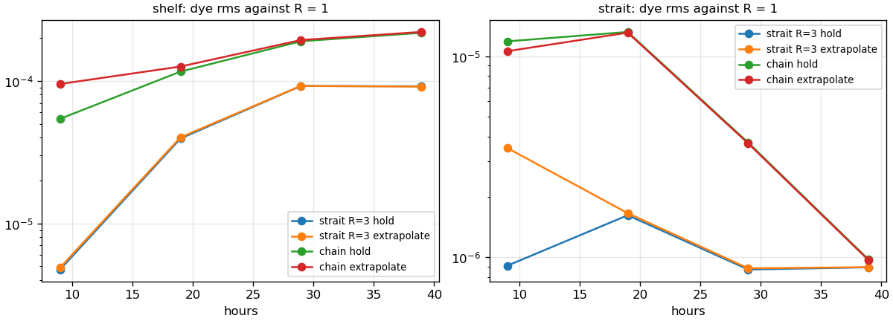
Nothing to gain here, so hold stays the default. In one parent 3D step (181 s) the tide moves the front about 50 m, 5 % of a parent cell:
the held ring is hardly out of date, and what differs from R = 1 is the child's own shorter step. Extrapolation pays where the parent's own Courant number is large over its
3D step (water moving a good part of a parent cell), as in DKm's fjords with the root's long 3D step; it is to be tried there.
Limited slopes in the 3D ring (11 November 2026)
The 3D ring was constant over each parent cell, so along an interface the child saw steps at the parent cells' edges. With slopes it is linear within each parent cell: the parent also sends its four neighbouring columns, and the child takes limited (minmod) slopes layer by layer. A first version (4 November) took the slopes from the parent's columns remapped onto the ring cell's layers. At rest that produced slopes of 0.04–0.08 °C per parent cell, because remapping columns of other depths and coarse layers gives slightly different profiles even where the water is horizontally uniform, and it was off by default. The new slopes are taken from anomalies: each parent column minus the child's own adjacent column seen through that parent column's layers (remapped onto them and back). The remap's errors are the same in both and cancel; a difference counts only above the shallower column's bottom, and the ring stays within the range of the five columns.
The dye front (V6) is compared with one model at the shelf's resolution (1 km) over the whole channel, the levels averaged onto its cells; V2 is the lake at rest:
| Test | constant per parent cell | slopes, first version | slopes |
|---|---|---|---|
| V2, largest spurious speed, channel / shelf / strait (mm/s) | 4.0 / 8.0 / 4.1 | 3.2 / 12.3 / 17.6 | 3.2 / 7.1 / 4.4 |
| V6, depth-mean dye against 1 km (rms), shelf / strait | 1.37e-2 / 5.8e-4 | – | 7.5e-3 / 3.2e-4 |
| V6, dye steps across parent-cell edges against within, along the interfaces, shelf / strait | 1.18 / 1.75 | – | 1.15 / 1.21 |
| V6, new extrema | 2e-4 (channel) | – | 1.3e-4 (channel) |
| uniform temperature; heat in a closed basin; restart | with slopes: uniform to 2e-13, heat to 6e-11, restart bit-identical | ||
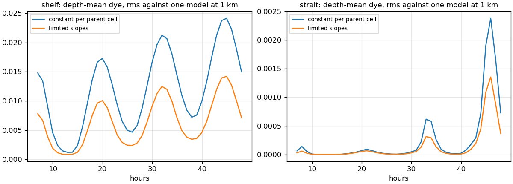
The slopes nearly halve the children's error in V6 and cost nothing at rest, so they are now the default.
A bent fjord on a curvilinear grid
A standalone example of pyGETM on a curvilinear grid with the new curvature term, prepared to become a child level of the IDEAL nest (curvilinear levels). 2 km wide, 10 × 125 cells of 200 m (a 1 km parent divided by 5), 40 m deep with a 20 m sill; from the mouth a straight section, a 90° bend with a 6 km radius, 12 km straight to the head. 3D, 20 layers.
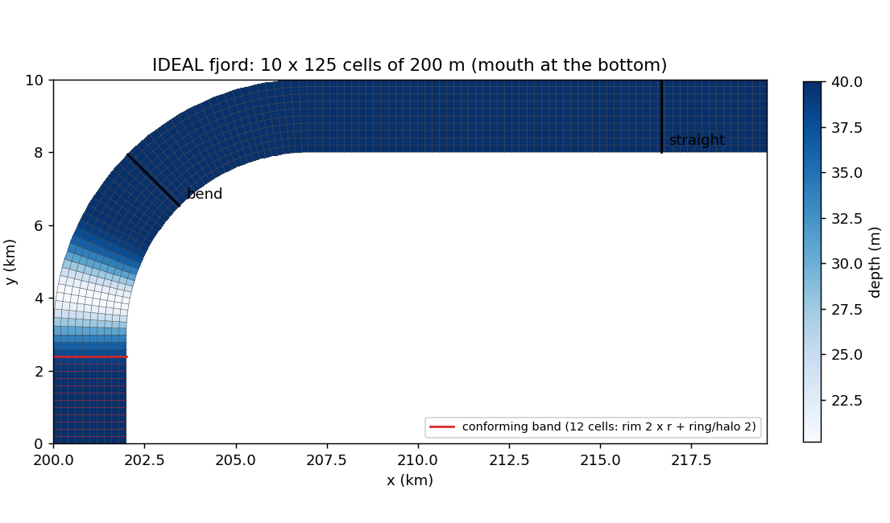
Flow through the bend
Open at both ends, 0.5 m/s in at the mouth and out at the head (Flather; the transports are given east and north and pyGETM rotates them to the grid, which points east at the head). Steady after about 3 h. Flow round a bend raises the outer bank by u² W / (g R), 8.3 mm here; the Earth's rotation raises the right bank by f u W / g, 10 mm.
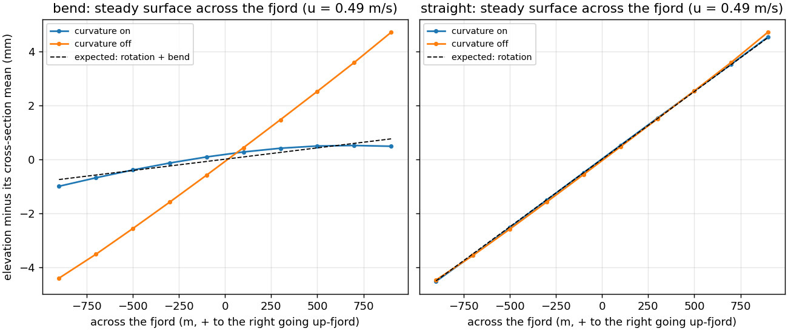
| Straight: rotation | Bend minus rotation: the bend | |
|---|---|---|
| expected | 10.0 mm | 8.3 mm |
| curvature term on (pyGETM's default here) | 9.1 mm | 7.6 mm |
| curvature term off | 9.2 mm | 0.08 mm |
Without the term the flow does not feel the bend: in grid coordinates the centripetal acceleration is the curvature term. With it the outer bank rises by 91 % of the simple estimate, which assumes the same speed across the fjord; the rotation's tilt in the straight part comes out at the same 91 %.
Tide and river
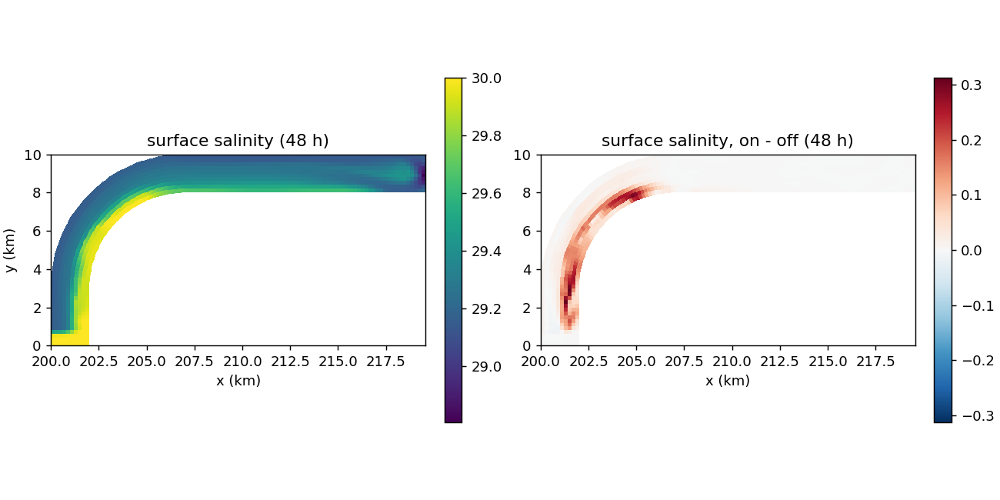
- Stable for 48 h. A closed fjord with only the river changes its volume by exactly the river's input; at rest it stays at rest with the term on.
- Cell areas from the corner quadrilaterals instead of dx × dy change the elevation by 3e-5 m (the grid is orthogonal).
- The tidal currents are only 3 cm/s: the fjord's tidal prism is small. The flow-through case is the test of the term.
The fjord as a level of the IDEAL nest
Channel (3 km) → shelf (1 km) → fjord (200 m, curvilinear), the strait left out (IDEAL/config/ideal3d_fjord.yaml). A coast on the shelf holds the fjord;
its mouth sits on shelf cell corners, and its straight mouth section is the shelf's grid refined by 5. The fjord steps 3.3 s against the shelf's 16.5 s, all on one
165 s 3D step. Salinity is 34 at the open west boundary and far away, with an initial fresh surface layer around the fjord's head; a river brings 50 m³/s of fresh water
at the head; the tide (0.5 m M2) comes from the west.
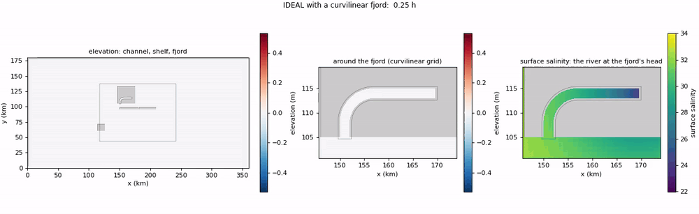
| Check | Result |
|---|---|
| closed basin, 12 h: volume / heat / dye of all levels | 2.7e-8 m³ / 1.4e-11 / 1.5e-10 |
| uniform temperature with tide, 12 h | 2–3e-13 °C in all levels, the fjord included |
| closed, the river on: volume change minus the river's input / salt content | 1.4e-8 m³ (of 2.0e6) / 2.6e-10 |
| restart halfway, tide, river and salinity, 2/2/1 processes | bit-identical in all fields and levels |
| start-up checks: too short a straight section, no coast, the mouth off its window | refused, each with its reason |
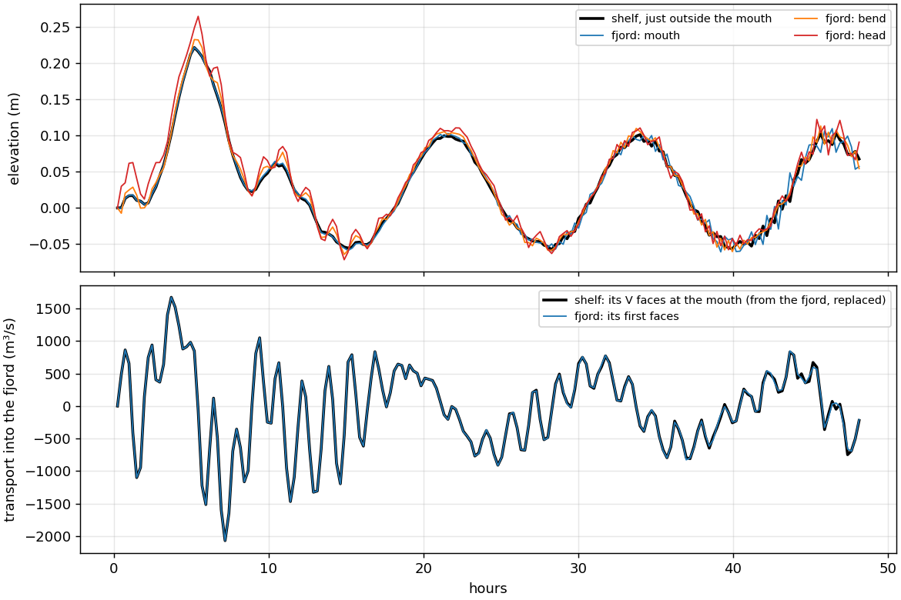
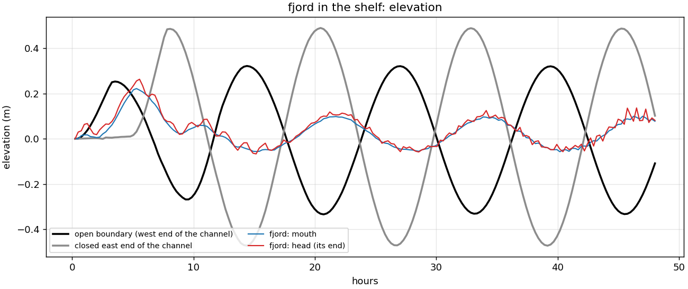
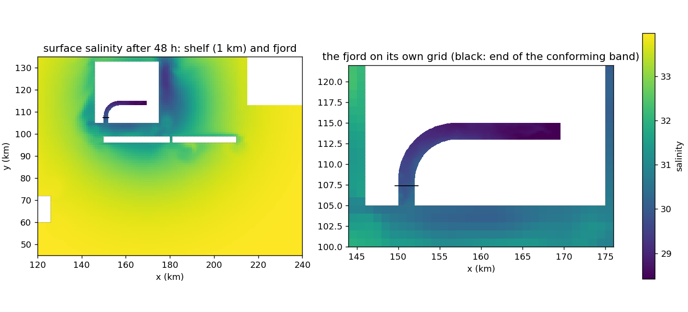
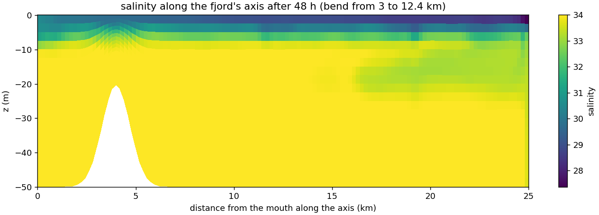
Found on the way, and fixed: the parent's hole beyond the conforming band was wetted from the child cells with the same indices, which lie in the bend ("phantom water", reaching the channel's rim); the 2D rim wrote the child's transports into the parent's land faces; and pyGETM relaxed the tracers' sponge zones a second time after a restart (restart).
At the root's edge: an estuary with an overhang
Can such a level be attached at the edge of the root, as the Elbe at the edge of a North Sea model? Its window now only needs to hold the mouth section; the rest of
the level is its overhang, computed by the level alone, with no parent cells beneath (IDEAL/config/ideal3d_estuary.yaml). Here the channel
(3 km) and an estuary (200 m, ratio 15): its window is 3 × 1 channel cells at the channel's north edge; beyond it the estuary runs out of the channel and bends east.
A river at its head, salinity 34 at sea, the tide from the west.
Stable over the 48 h run (largest elevation in the estuary 0.27 m, currents up to 0.9 m/s in the river plume), with two settings in the estuary's block of the layout:
- its own 3D step (
split: 30: 88 s against the channel's 439 s). With the channel's step the tracer advection is unstable in the river plume (3D Courant number 1.8): the salinity blows up within 5 hours. - a sponge one parent cell wide (
sponge_cells: 15). With the default 3 child cells a cross-estuary mode grows from about 16 h (1 m at 24 h, 7 m at 40 h): the 2D coupling's sub-stepping instability, here at a time ratio of 15. It grows the same with the curvature term off, without the river and with uniform salinity; a stronger sponge (alpha 0.3) is unstable itself.
Everything below is with both settings.
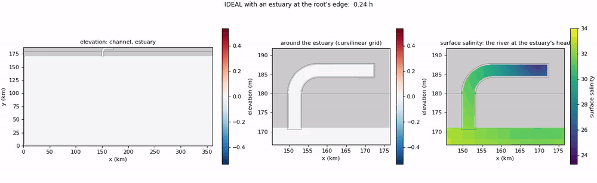
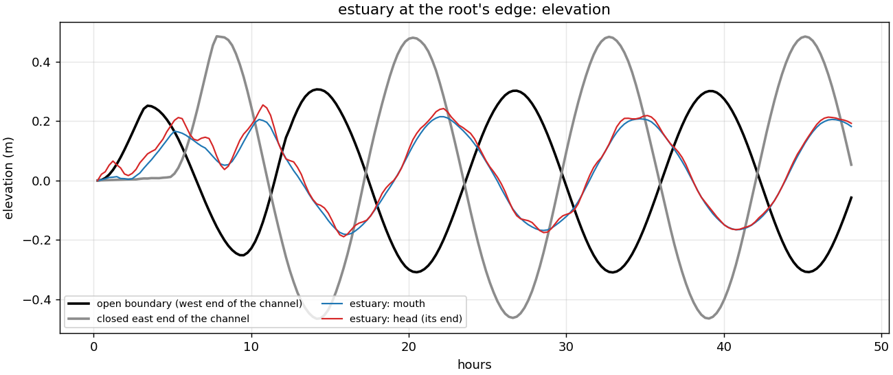
Why mouth and head are in phase. Both inlets are far too short for the tide to travel along them. In 50 m of water a long wave runs at √(gH) ≈ 22 m/s, so an M2 wave is about 990 km long; the estuary is 33 km (3 % of that), the fjord 25 km. In an inlet closed at its head the incoming and the reflected tide form a standing wave with its antinode at the head: the surface rises and falls everywhere at the same time, and only the amplitude grows towards the head, by 1/cos(2πL/λ). The 25 minutes a wave needs from the mouth to the head show up in that small amplification, not as a delay; a phase lag needs friction strong enough to dissipate the reflected wave, which is small in 50 m of water. An M2 fit to the second day:
| Expected head / mouth | M2 amplitude, mouth → head | Phase difference | |
|---|---|---|---|
| estuary (33 km) | 1.022 | 0.190 → 0.193 m (× 1.020) | +0.03° (0.1 min) |
| fjord in the shelf (25 km) | 1.013 | 0.074 → 0.076 m (× 1.040) | −0.01° |
The estuary matches the theory. For the fjord, checked with three more runs (tide only, the river only, the fresh layer only): with the tide alone the head is still ×1.06 against the fjord's first row, so it is not the fresh water. Against the shelf just outside the mouth the fjord's first rows are damped by the sponge at the interface (×0.97 at 0.1 km, ×0.99 at 0.5 km: the sponge spans 0.6 km), which inflated the ratio by 3 %; from there the amplitude grows to ×1.03 at the head, in phase. The remaining 2 % above the theory's 1.013 is within how well the forcing is defined there: the fjord lies near the node of the channel's standing tide, where the shelf's amplitude changes by 7 % within 3 km. The fresh water adds 1–2 cm of other signal on top (×1.086 in the middle in the full run). A real estuary shows a tidal phase lag when it is long against the wavelength (the Elbe runs about 140 km to Hamburg, in shallower water with slower waves) or friction dissipates the reflected wave.
| Check (12 h) | Result |
|---|---|
| closed, uniform salinity: volume / heat / dye | 2.1e-8 m³ / 1.9e-11 / 6.8e-11 |
| closed, fresh layer and river: volume change minus the river's input / salt | -4e-9 m³ (of 2.0e6) / 6.2e-10 |
| uniform temperature with tide | 2–4e-13 °C |
| restart halfway, tide, river, salinity | bit-identical |
With strong baroclinic currents (the fresh layer) heat and salt are conserved to 6e-10, as for the fjord in the shelf; 2e-11 with uniform salinity.
A dam and a sluice between two levels
DKm's Ringkøbing Fjord meets the sea only through the sluice at Hvide Sande. In small (IDEAL/config/ideal3d_sluice.yaml): the fjord in the shelf, closed by a
dam of zero width across its straight part (x = 160.18 km, on the fjord's cell edges: 10 faces closed), its inner basin with the head river (50 m³/s) drained by a
one-way sluice (a flap gate, 50 m²) to the shelf south of the island. The sluice's inner end is on the fjord level, its outer end on the shelf; the two levels
compute the flow together at every shelf step, and each applies it to its own end (methods).
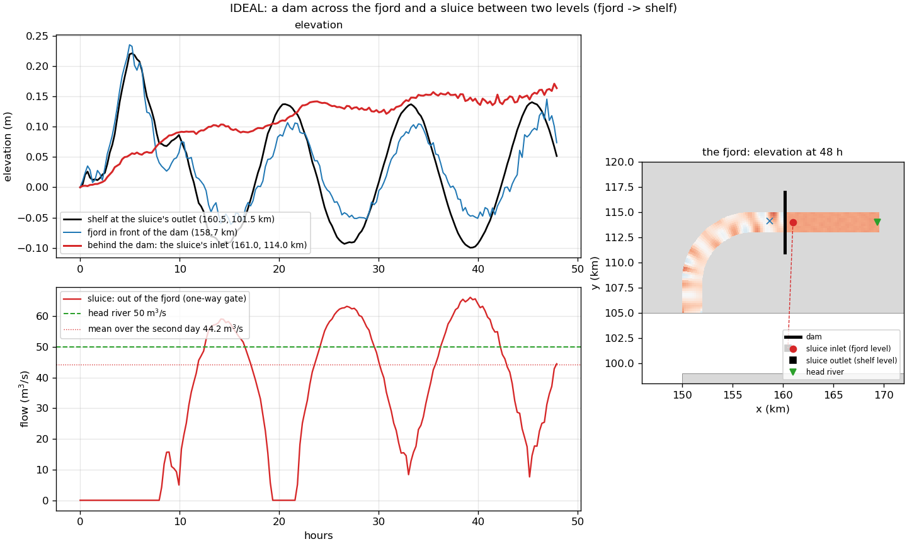
| Check | Result |
|---|---|
| closed basin, 12 h: total volume change minus the three rivers' input | 2e-15 (relative) |
| salt of all levels | 5e-11 |
| the inner basin: volume change minus (river − sluice) | 1e-13 (relative) |
| restart at 12 h while the sluice flows | bit-identical |
| a dam on an interface | refused at start-up |